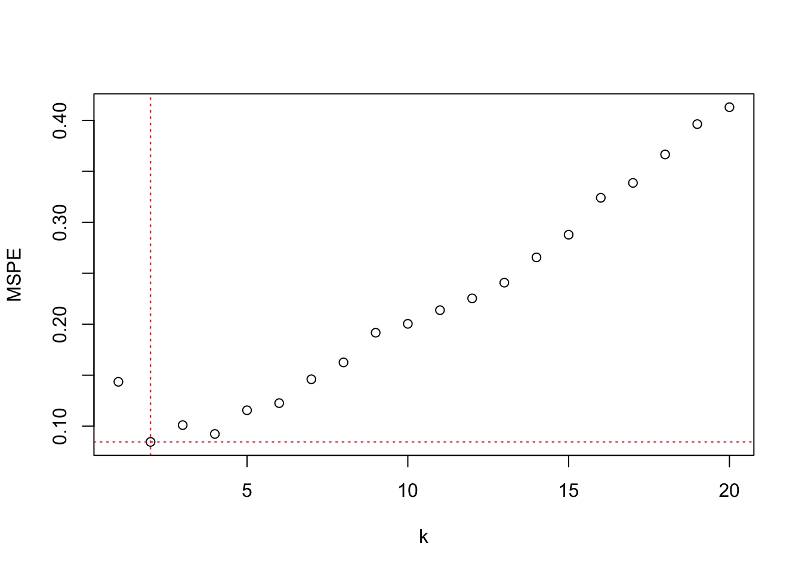

6 Introduction
6.1 Adding Structure
The regression task can be described generally as estimating the mean function of a target random variable as a function of fixed input variables (they are not random variables). Formally, suppose we have \(n\) pairs of observations \((y_i, \textbf{x}_i)\), \(i=1,\cdots, n\). \(y_i\) is the observed value for the target variable for the \(i\)th observation; it is the realization of the random variable \(Y_i\). \(\textbf{x}_i = [x_{i1}, \cdots, x_{ip}]\) is the vector of input variables for that observation. The regression task then is to find the function \(f^*(\textbf{x}_i)\) for which \[ \text{E}[Y_i | \textbf{x}_i] = f^*(\textbf{x}_i) \]
Additive Error Models
We did not write this model as a regression model with additive errors, that is, \(Y_i = f^*(\textbf{x}_i) + \epsilon_i\). Additive error models are a special class of regression models useful when \(Y\) is continuous. If you write the regression model in terms of an expected value, the model is more general and applies to categorical target variables as well.
The function on the right hand side is denoted with an asterisk because it is unknown. We also did not specify what \(f^*\) looks like or how it relates to model parameters such as the regression coefficients in a linear regression model. The problem is not well defined yet, there are infinitely many solutions. Any function that interpolates the \(y_i\) data points is a candidate for \(f^*\), but that is not a very interesting model.
Since \(Y_i\) is a random variable, and \(f^*(\textbf{x}_i)\) expresses how its mean varies as a function of the input variables, we are not interested in models that reproduce the noisy version of the data. We are interested in finding the smooth signal in the noise (Figure 6.1). Finding the appropriate degree of smoothness in the mean function by balancing the bias-variance tradeoff is an important part of regression analysis (Chapter 2).
Constraints on Model Structure
But we cannot just consider bias and variance among all possible functions \(f^*\), we need to add further structure to make solutions tractable. Adding structure is done by imposing constraints on \(f^*\) so that we can find a (hopefully unique) solution within the class of constraints. For example, we can structure the problem by insisting that only global functions with a linear predictor are considered.
Consider the case of predicting the mean of the target variable at some location \(\textbf{x}_0\) in the input space. \(\textbf{x}_0\) can be a one of the observed data points or a new value. A global model is one that applies regardless of the value of \(\textbf{x}_0\). A local model on the other hand applies a different model depending on the value of \(\textbf{x}_0\).
In Section 1.2 the concept of the linear predictor was introduced:
\[ \eta = \beta_{0} + \beta_1 x_1 + \cdots + \beta_p x_p \]
The constraint—global model with linear predictor—adds much structure to the regression problem. We are now looking for mean functions of the following form
\[ \text{E}[Y_i | \textbf{x}_i] = g(\eta) = g(\beta_0 + \beta_1 x_{i1} + \cdots + \beta_p x_{ip}) \]
The function \(g()\) is a transformation of the linear predictor, a map between the linear effects of the inputs and the mean of the target variable. Adding a further constraint, that \(g()\) is the identity function, leads to the linear regression model
\[ \text{E}[Y_i | \textbf{x}_i] = \beta_0 + \beta_1 x_{i1} + \cdots + \beta_p x_{ip} \]
In this special case we can write the model for \(Y_i\) with an additive error term
\[ Y_i = \beta_0 + \beta_1 x_{i1}+\cdots + \beta_p x_{ip} + \epsilon_i \]
where \(\text{E}[\epsilon_i] = 0\).
For many this is “the classical” or “the standard” or simply “the” regression model. It is just one form of structuring the regression problem, and a highly structured form at that. We are not done, however. One could insist on only a single predictor variable, leading to the simple linear regression (SLR) model
\[ Y_i = \beta_0 + \beta_1 x_{i} + \epsilon_i \]
or on input variables that are successive powers of a single input, the polynomial regression model
\[ Y_i = \beta_0 + \beta_1 x_{i} + \beta_2 x_{i}^2 + \beta_3 x_i^3 + \cdots + \epsilon_i \]
Figure 6.2 categorizes the approaches to structuring the regression problem. The classical regression models (SLR/MLR) are just one of many ways to tackle estimating a mean function.
{kind=link}
Constraints on Estimation
Imposing constraints on the solution of the regression problem can also be done through the method of parameter estimation. Take, for example, the linear regression model \(y_i = \textbf{x}_i^\prime\boldsymbol{\beta}+ \epsilon_i\). The ordinary least squares (OLS) estimator satisfies \[ \mathop{\mathrm{arg\,min}}_\boldsymbol{\beta}\sum_{i=1}^n \left(y_i - \textbf{x}_i^\prime\boldsymbol{\beta}\right)^2 \]
The solution is constrained in the sense that it is the orthogonal projection of the data onto the space spanned by the columns of the \(\textbf{X}\) matrix. While OLS estimators are easy to work with and have nice properties, for example they are unbiased if the model is correct, they suffer from large variability in high-dimensional problems (large \(p\)) and when the \(x\)-s are highly interrelated. A solution to that problem lies in adding further constraints on the estimators.
Ridge regression minimizes instead of the OLS criterion the expression \[ \sum_{i=1}^n \left(y_i - \textbf{x}_i^\prime \boldsymbol{\beta}\right)^2 + \lambda\sum_{j=1}^p\beta_j^2 \] The additional term (\(\lambda\sum \beta_j^2\)) is a roughness (regularization) penalty added to the least-squares criterion. For a given value of the hyperparameter \(\lambda\), large values of the \(\beta\)-coefficients add a greater penalty to the error sum of squares than small values of the coefficients. This has the effect of suppressing the magnitude of the \(\beta\)s, shrinking them toward zero. The Ridge regression estimator is an example of a class of estimators called shrinkage estimators for that reason.
One can also apply other penalty terms. Lasso regression (least absolute shrinkage and selection operator) uses absolute values in the regularization penalty \[ \sum_{i=1}^n \left(y_i - \textbf{x}_i^\prime \boldsymbol{\beta}\right)^2 + \lambda\sum_{j=1}^p |\beta_j| \] and elastic net regularization combines the two types of penalties \[ \sum_{i=1}^n \left(y_i - \textbf{x}_i^\prime \boldsymbol{\beta}\right)^2 + \lambda \left(\frac{1-\alpha}{2}\sum_{j=1}^p\beta_j^2 + \alpha\sum_{j=1}^p |\beta_j|\right) \] In addition to the shrinkage penalty parameter \(\lambda\), the elastic net has a mixing parameter \(\alpha\) that determines the weighting between the Ridge-style and the Lasso-style penalty. \(\alpha=0\) leads to Ridge regression, \(\alpha=1\) leads to Lasso regression. Any value in between represents a mixture of the two.
Lasso is popular because the absolute-value regularization has an interesting side effect: coefficients are shrunk not just toward zero, they can be shrunk to exactly zero. This has the effect of eliminating the associated input variable from the model. In Ridge regression, on the other hand, the coefficients are shrunk toward zero but do not reach exactly zero. Lasso is thus used to regularize the model and to select input variables at the same time. This has also immediate practical advantages. If you start with 100 inputs and apply Lasso regression, you might end up with 10 non-zero coefficient, whereas in Ridge regression you will have 100 non-zero (albeit shrunk) coefficient. To use the fitted Lasso model for prediction you need information on only the 10 input variables with non-zero coefficients. To use the fitted Ridge regression model for prediction you need information on all 100 input variables.
Constrained estimation can also be at work for local models on the right hand side of Figure 6.2. Kernel estimators apply kernel functions that weigh observations depending on their proximity to a target point of prediction. Suppose we have a single input variable \(x\). A kernel estimator minimizes \[ \sum_{i=1}^n \, K_\lambda(x_0,x_i) (y_i - f(x_i))^2 \] \(K_\lambda(x_0,x_i)\) is the kernel function that depends on the target point of prediction (\(x_0\)) and some hyperparameter \(\lambda\). Choosing the kernel function and the bandwidth parameter \(\lambda\) affects the smoothness of the predictions.
6.2 Local and Global Models
Global models structure the estimation problem by adding explicit parameters to the regression function. SLR and MLR are linear regression models where \(f(\textbf{x}) = \eta = \textbf{x}^\prime \boldsymbol{\beta}\). Generalized linear models introduce an invertible link function to map between linear predictor and the mean function, \[ f(\textbf{x}) = g(\eta) = g(\textbf{x}^\prime\boldsymbol{\beta}) \]
In nonlinear regression models the mean function depends non-linearly on at least one of the parameters, \(f(\textbf{x}) = f(x_1,\cdots,x_k;\beta_1,\cdots,\beta_p)\). The number of input variables and the number of parameters can be different in nonlinear models. A model might have only one input but many nonlinear parameters.
Example: First-order Compartmental Model
The data in the following graph show the concentration of a drug in the body of patients over time. The drug was administered at time 0 at one of two doses. The doses are shown with different colored symbols. After a period of absorption the body begins to eliminate the drug.
A common pharmacokinetic model for this situation is the first-order compartmental model \[ C(t) = \frac{D k_a k_e}{C(k_a-k_e)} \left(\exp(t\,k_e) - \exp(t\,k_a)\right) \]
The quantities in the compartmental model represent
- \(C\): the concentration of the drug at time \(t\)
- \(D\): the administered dose of the drug
- \(k_a\): the rate of absorption by the body
- \(k_e\): the rate of elimination from the body
- \(C\): the clearance (volume of blood or plasma cleared of the drug per time unit)
This is a nonlinear regression model with two inputs (dose and time) and three parameters (\(C, k_e, k_a\)).
Rather than structuring the model with parameters, the local approaches on the right side of Figure 6.2 are structuring the method of statistical learning, introducing local variations of the model in a neighborhood of a target location \(\textbf{x}_0\) in some form. This is done either explicitly through weight functions that emphasize observations close to \(\textbf{x}_0\) more than remote observations or implicitly through reliance of spline basis expansions. Local models with the exception of \(k\)-nearest neighbor regression are referred to as scatterplot smoothers, they typically depend on a single input \(x\).
The intuition behind local models that rely on weighing is simple. If you are not sure about the global behavior of the mean function across all possible values of \(x\), you might be more comfortable specifying the behavior in a neighborhood of \(x_0\). A model that is too simple to describe the overall, global, trend might be good enough to describe a trend locally (Figure 6.3). Observations that are near each other in \(x\)-space are probably more alike than observations that are far apart, making simple local models that vary its parameters as \(x\) takes on different values a logical choice. Figure 6.4 summarizes the important ways in which models are localized.
{kind=link}
Localizing a Model
You can create a local version of any global model by applying a weighted analysis with a weight function that places more emphasis on data points near the prediction location \(\textbf{x}_0\) of interest, and less emphasis on remote points. As you choose different values for \(\textbf{x}_0\) the weights are recalculated and the weighted model is refit. Any class of global models can be localized this way.
Generalized additive models (GAM) are a fascinating class of regression models that combine aspects of global and local models. In a GAM, some model components can be based on purely parametric formulations while other components are scatterplot smoothers.
6.3 Fitting a Regression Model
The process of fitting a regression model to data can now be described in the following steps:
Decide on how to structure the problem, that is, select the class of restrictions.
Estimate the parameters by a direct method of estimation and the hyperparameters by a form of cross-validation.
Diagnose the performance of the model. If not satisfactory, change the model or select a different class of restrictions and return to previous step.
Every decision in this flow has implications for the bias-variance tradeoff. A good data scientist learns what matters most and where to place the focus of the investigation. For example, in kernel methods it is typically the case that the bandwidth of the kernel function (the hyperparameter \(\lambda\)) has more impact on the bias-variance tradeoff than the selection of the kernel function itself (Epanechnikov vs. Tricube kernel, for example).
6.4 \(k\)-nearest Neighbor Regression
One of the simplest regression techniques is \(k\)-nearest neighbor (\(k\)-NN) regression. It is a local method but can be made global by choosing \(k = n\). The idea is very simple: find the \(k\) observation nearest to \(\textbf{x}_0\) according to some distant metric and compute some representative value from them (typically the arithmetic average, but can also use the median, harmonic mean, etc.). \(k\)-NN can also be used in classification problems: here we choose as the predicted category the class that is most frequent among the \(k\) neighbors.
Example: Melanoma Incidences
The following data from the Connecticut Tumor Registry and represent age-adjusted numbers of melanoma incidences per 100,000 people for the 37 years from 1936 to 1972 (Houghton, Flannery, and Viola 1980). These data are used in the Getting Started example of the SAS PROC LOESS documentation.
library("duckdb")
con <- dbConnect(duckdb(),dbdir = "ads.ddb",read_only=TRUE)
melanoma <- dbGetQuery(con, "SELECT * FROM melanoma")
dbDisconnect(con)
head(melanoma) year incidences
1 1936 0.9
2 1937 0.8
3 1938 0.8
4 1939 1.3
5 1940 1.4
6 1941 1.2import duckdb
con = duckdb.connect(database="ads.ddb", read_only=True)
melanoma = con.sql("SELECT * FROM melanoma").df()
con.close()
melanoma.head() year incidences
0 1936 0.9
1 1937 0.8
2 1938 0.8
3 1939 1.3
4 1940 1.4Suppose we are interested in predicting the mean melanoma incidence at 1957.3 in a 3-NN analysis. The following graph shows the prediction location \(x_0 = 1957.3\), the three nearest neighbors, and the predicted incidence as their average (cross symbol).
The predictions for two time points and the global prediction \(\overline{y}\) are shown next. Note that the global predicted value is the same as the \(n\)-nearest neighbor estimate.
The \(k\)-nearest neighbor analysis is a local regression method that shares many of the general features of local methods:
Flexible, general, and intuitive
Combines fitting and prediction into a single step. To compute a predicted value at \(x_0\), the model is fit to the data in the neighborhood of \(x_0\).
Interpolative rather than extrapolative. You cannot extrapolate a local method reliably beyond the range of observed data. At the boundary of the space, the \(k\)-nearest neighbors are the same data points near the edge of the observed range. The estimate does not change once the most extreme \(k\) data points are selected.
Example: Melanoma Incidences (Cont’d)
The predicted 3-NN values for any time point beyond 1972 are the same, the average of the three observations with the largest \(x\)-values. The plot shows the data points that contribute to predictions for 1972 and 1975.
Have issues at the boundary of the data range when observations contribute only from one direction into the estimation window.
Suffer from the curse of dimensionality. (See next subsection)
Control smoothness through hyperparameters, here, \(k\). To see the effect of \(k\) on the bias-variance tradeoff, we consider the mean squared error of the \(k\)-NN estimator. Suppose \(Y = f(x)+\epsilon\), \(\epsilon \sim (0,\sigma^2)\), and the \(k\)-NN estimator is the arithmetic mean in the neighborhood \[ \widehat{f}(x_0) = \frac{1}{k}\sum_{i=1}^k f(x_{(i)}) = \frac{1}{k}\sum_{i=1}^k y_i \]
The MSE of \(\widehat{f}(x_0)\) as an estimator of \(f(x)\) is \[ \text{E}\left[(Y-\widehat{f}(x_0))^2 \right] = \frac{\sigma^2}{k} + \left(f(x_0) - \widehat{f}(x_0) \right)^2 + \sigma^2 \] The first term, \(\sigma^2/k\) is the variance of a sample mean of \(k\) observations, the second term is the squared bias component, and the third term is the irreducible error. As \(k\) increases the \(k\)-NN estimator approaches the sample mean \(\overline{Y}\) w ith variance \(\sigma^2/n\). While the variance term gets smaller, the squared bias term increases unless \(f(x)\) does not depend on \(x\), in which case the sample mean is the optimal estimator. As \(k\) decreases, squared bias component decreases but the variance component \(\sigma^2/k\) is large. In the extreme case of \(k=1\) the mean squared error becomes \[ \text{E}\left[(Y-\widehat{f}(x_0))^2 \right] = 2 \sigma^2 + (f(x_0) - f(x_{(1)})^2 \] In summary: If \(k\) is large, the estimator has low variability and large bias; if \(k\) is small, the estimator has large variability and small bias. This is the classical bias-variance tradeoff.
Example: Melanoma Incidences (Cont’d)
The next graph shows \(k\)-NN estimators for different values of \(k\) (\(k =5,10, 20\)). With increasing \(k\) the predictions show less variability and more bias, in particular near the edges.
To resolve the bias-variance tradeoff, the hyperparameter \(k\) can be chosen by cross-validation.
Example: Melanoma Incidences (Cont’d)
The following statements perform leave-one-out cross-validation by setting the number of cross-validation folds equal to the number of observations (nfolds=nrow(melanoma)) using the knn.cv function in the Rfast library.
library(Rfast)
kcv <- Rfast::knn.cv(nfolds=nrow(melanoma),
y=melanoma$incidences,
x=as.matrix(melanoma$year),
k=seq(1,20,1),
type="R")
plot(kcv$crit, ylab="MSPE",xlab="k")
abline(h=min(kcv$crit),col="red",lty="dotted")
abline(v=which(kcv$crit==min(kcv$crit)),col="red",lty="dotted")
The value for which the nearest-neighbor analysis achieves the lowest LOOCV error for this data set is \(k=2\).
import numpy as np
import pandas as pd
import matplotlib.pyplot as plt
from sklearn.neighbors import KNeighborsRegressor
from sklearn.model_selection import cross_val_score
import math
# Convert 'year' to a numpy array and reshape for sklearn (needs 2D array)
X = melanoma['year'].values.reshape(-1, 1)
y = melanoma['incidences'].values
k_values = range(1, 21)
mspe = []
# Perform leave-one-out cross-validation for each k value
for k in k_values:
knn = KNeighborsRegressor(n_neighbors=k)
# We use -1 * negative_mean_squared_error which gives us MSE
# We use leave-one-out CV (equivalent to nfolds=nrow(melanoma))
scores = cross_val_score(
knn, X, y,
cv=len(melanoma), # leave-one-out CV
scoring='neg_mean_squared_error'
)
mspe.append(-np.mean(scores)) # Convert back to positive MSE
# Create the plot
plt.figure(figsize=(10, 6))
plt.plot(k_values, mspe, marker='o')
plt.axhline(y=min(mspe), color='red', linestyle='dotted')
plt.axvline(x=k_values[np.argmin(mspe)], color='red', linestyle='dotted')
plt.xlabel('k')
plt.ylabel('MSPE')
plt.title('K-Nearest Neighbors Cross-Validation')
plt.grid(True, alpha=0.3)
plt.tight_layout()
plt.show()print(f"Optimal k value: {k_values[np.argmin(mspe)]}")Optimal k value: 2print(f"Minimum MSPE: {min(mspe)}")Minimum MSPE: 0.08452702702702707The value for which the nearest-neighbor analysis achieves the lowest LOOCV error for this data set is \(k=2\).
The \(k\)-NN estimator is a special case of a kernel estimator. Rather than a smooth bell-shaped kernel function that assigned real-valued weights to observations, its kernel is binary, an observation either contributes fully to the estimate or does not contribute at all–depending on whether it is in the neighborhood of \(\textbf{x}_0\). The kernel function for the \(k\)-NN estimator can be written as \[ K(x_0,x_i) = I(||x_i-x_0|| \le ||x_{(k)} - x_0 ||) \] where \(x_{(k)}\) denotes the observation ranked \(k\)th in distance from \(x_0\), \(||x_i-x_0||\) denotes the distance of \(x_i\) from the prediction location \(x_0\), and \(I()\) is the indicator function (\(I(a)\) is 1 if \(a\) is true).
Curse of Dimensionality
The curse of dimensionality describes a problem that is common with local methods that use data within a window for the analysis. As the number of dimensions \(p\) increases (the number of input variables), the number of samples (observations) needed to maintain the same sample intensity as in lower-dimensional problems increases exponentially. There are two ways to look at this curse.
Fixed-size neighborhood
Suppose that \(X_1, \cdots, X_p\) are uniformly distributed on \([0,1]\). Choose a local neighborhood that includes observations within 10% of the range. A model with a single input (\(p=1\)) selects \(0.1 \times 100\% = 10\%\) of the data. A model with \(p=2\) selects \(0.1^2 \times 100\% = 1\%\) of the data. At \(p=10\) we select only \(0.00000001\%\) of the data. As \(p\) increases, the fraction of observations available to make a prediction decreases exponentially.
Fixed-fraction neighborhood
Now suppose the same setup applies but we are selecting 10% of the observations:
\(p= 1\) covers \(0.1^1 = 0.1\) of the range of \(X_1\)
\(p= 2\) covers \(0.1^{1/2} = 0.31\) of the range of \(X_1\) and \(X_2\)
\(p=10\) covers \(0.1^{1/10} = 0.79\) of the range of \(X_1, \cdots, X_{10}\)
As \(p\) increases, you have to increase the “neighborhood” to capture a constant fraction of the observations. Eventually, there is nothing local about these neighborhoods and many points will be near the edge of the data space. If you place 50 observations in 20 dimensions no two observations are close to each other.
{kind=link}
As a consequence of the curse of dimensionality, local models are typically used in low-dimensional problems, \(p=1\) or \(p=2\). Global, parametric models do not suffer from this curse; you can add inputs (predictors) without increasing the sample size (within reason).